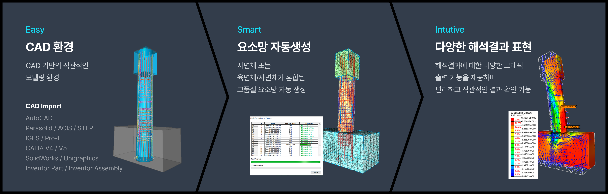

3B geometri ve tasarım verileri
Geometri, yerleşim ve tasarım koşullarını içeren koruge çelik yapı BIM modellemesi.

Kendi geliştirdiğimiz BIM; 3B geometriyi, yapısal kontrolleri, çizimleri ve metrajı birleştirir.
İndirilebilir dokümanların dili ilgili kayıtta belirtilir. PDF’ler, yazılım ekranları ve görsellerin içindeki metinler özgün dilindedir.
CORRA, koruge çelik yapıların geometrisini ve mühendislik verilerini birleştiren, kendi geliştirdiğimiz BIM tasarım yazılımıdır. 3B model, yapısal kontroller, çizimler ve metraj üretimi tek bir tasarım akışında bütünleşir.
Geometri, yerleşim ve tasarım koşullarını içeren koruge çelik yapı BIM modellemesi.
Geometri, örtü kalınlığı, yükler ve zemin koşullarına göre yapısal kontroller.
Tasarım girdilerini genel yerleşim çizimlerine, plaka yerleşimlerine ve metraj tablolarına dönüştürün.
Geometri, yapı ve imalat bilgileri tek bir iş akışında. Koruge çelik plaka için geliştirdiğimiz CORRA, yapısal kontrolleri otomatik çizim ve metraj üretimine bağlar.
Tasarım koşullarını girin,
geometri ve yerleşimi 3B olarak inceleyin.
Yapı ve yol yerleşimi
Kutu kesit ve gömülü yapı geometrisi
Giriş ve yardımcı yapı geometrisi
BIM, geometri ile bilgiyi birleştirir.
Tasarımı çizimlerin yanında 3B modeller ve verilerle anlatın.
Geometri ve tasarım koşullarından çizim ve metraj üreterek tekrarlı girişi azaltın; kontrol bilgilerini tek iş akışında düzenleyin.
İşveren, tasarımcı ve yüklenici; 3B model ve çizimler üzerinden geometriyi, yerleşimi ve yardımcı yapıları birlikte inceleyebilir.
Ürün ve yöntem uygulamalarını mühendislik ve imalat çıktılarıyla birlikte sunarak teknik teklifleri ve koordinasyonu destekleyin.
Kore Arazi, Altyapı ve Ulaştırma Bakanlığı BIM kılavuzu, tasarım bilgilerinin 3B modellerle birleştirilmesini ve sonraki aşamalarda kullanılmasını öngörür. CORRA, koruge çelik plaka tasarım ve imalat verilerini birleştiren BIM yetenekleri sunar.
Gerçek CORRA çıktı örnekleri.
Büyütmek için çizimi seçin.
Plan · Boyuna kesit · Enkesit
Plaka bölümlendirme ve yerleşim
Kutu kesitli yapı: plan · Kesitler
Giriş geometrisi · Kesitler
Otomatik üretim işlevini gösteren örnek çizimlerdir. Uygulama öncesinde projeye özgü girdiler, hesaplar ve çizimler mühendis tarafından kontrol edilmelidir.
Gömülü helisel koruge çelik borular için geliştirdiğimiz yapısal kontrol yazılımı. Çap, et kalınlığı, yük ve örtü kalınlığını girerek kontrol sonuçlarını ve tasarım aralığı tablolarını inceleyin.
Girdilere göre boru cidarı basıncı ve burkulması, esneklik katsayısı, minimum örtü ve deformasyon kontrollerini inceleyin.
Seçilen koruge profili için çap ve et kalınlığına göre minimum örtü, maksimum dolgu yüksekliği ve boru ağırlığını karşılaştırın.
Hesap raporlarını Word’e, tasarım aralığı tablolarını Excel’e aktararak teknik koordinasyonda ve teslim dokümanlarında kullanın.
KL-510 karayolu yükü gibi Kore tasarım koşulları tanımlanabilir. Demiryolu yükleri ve özel koşullar işveren kriterlerine göre doğrulanır.
ASTM A796 / AASHTO esaslı kontrolleri ve Tayvan karayolu/demiryolu yük tanımlarını destekler. Arayüz ve raporlar Korece ve Geleneksel Çinceyi destekler.
Arayüzü ve çıktı örneklerini birlikte inceleyin.
Çap · Et kalınlığı · Örtü tek bakışta
Tasarım esasları · Hesaplar · Kontrol sonuçları
v1.0.0 kullanım kılavuzundaki işlevler ve ekran örnekleri. Uygulama öncesinde işveren kriterleri ve tasarım koşulları doğrulanmalı, sonuçlar mühendis tarafından kontrol edilmelidir.
CORRA’nın yanında yapısal, geoteknik ve detay analizleri ile yardımcı yapı tasarımını destekleyen yazılımlara sahibiz.
 Sahip olduğumuz yazılımlar
Sahip olduğumuz yazılımlarHareketli yükler ve yapım aşamaları dâhil inşaat yapılarının analiz ve tasarım kontrollerinde kullanılır.
Görsel kaynağı · MIDAS IT resmî ürün sayfası ↗ Sahip olduğumuz yazılımlar
Sahip olduğumuz yazılımlarZemin, gömülü yapılar, temeller ve yapım aşaması davranışları incelenir.
Görsel kaynağı · MIDAS IT resmî ürün sayfası ↗
Sahip olduğumuz yazılımlarYapıların ve bağlantıların detay davranışı ile doğrusal olmayan analizleri incelenir.
Görsel kaynağı · MIDAS IT resmî ürün sayfası ↗ Sahip olduğumuz yazılımlar
Sahip olduğumuz yazılımlarİstinat duvarlarında stabilite ve kesit kontrolleri, çizimler, hesaplar ve metraj için kullanılır.
Görsel kaynağı · aroad resmî ürün sayfası ↗ Sahip olduğumuz yazılımlar
Sahip olduğumuz yazılımlarMenfez, kanat duvarı ve diğer yardımcı yapıların tasarımında ve doküman üretiminde kullanılır.
Görsel kaynağı · aroad resmî ürün sayfası ↗Yazılım görselleri ilgili üreticilerin ürün tanıtım dokümanlarından alınmıştır.
Ürün, tasarım ve saha desteği için bize ulaşın.